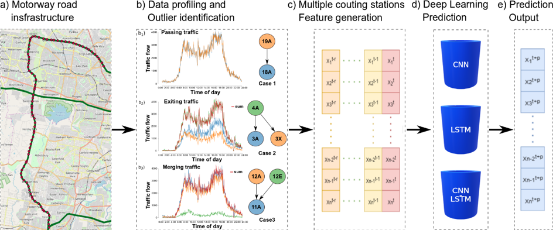

Congestion prediction represents a major priority for traffic management centres around the world to ensure timely incident response handling. The increasing amounts of generated traffic data have been used to train machine learning predictors for traffic, however this is a challenging t ask due to inter-dependencies of traffic flow both in time and space.
This work proposes an advanced deep learning framework for simultaneously predicting the traffic flow on a large number of monitoring stations along the M7 motorway in Sydney, Australia, including exit and entry loop count stations, and over varying training and prediction time horizons (see figure below). The spatial and temporal features extracted from the 36.34 million data points are used in various deep learning architectures that exploit their spatial structure (convolutional neuronal networks), their temporal dynamics (recurrent neuronal networks), or both through a hybrid spatiotemporal modelling (CNN-LSTM). We show that our deep learning models consistently outperform traditional methods, and we conduct a comparative analysis of the optimal time horizon of historical data required to predict traffic flow at different time points in the future.
The findings showcase LSTM as having the best predictive performance, despite having competed against a hybrid model combining CNN and LSTM. Our analysis reveals that the optimal past time horizon needs to be adapted for each DL model: LSTM and its variants learn long-term trends and require longer histories, while CNN learns spatial correlations from short histories. We summarise the advantages of our proposed deep learning modelling as:
Mihaita, A.S., Li, H., He, Z., Rizoiu, M.-A. (2019) Motorway Traffic Flow Prediction using Advanced Deep Learning, Proceedings of the 22nd Intelligent Transportation Systems Conference (ITSC'19) Auckland, New Zealand. 27-30 October, 2019. Preprint link